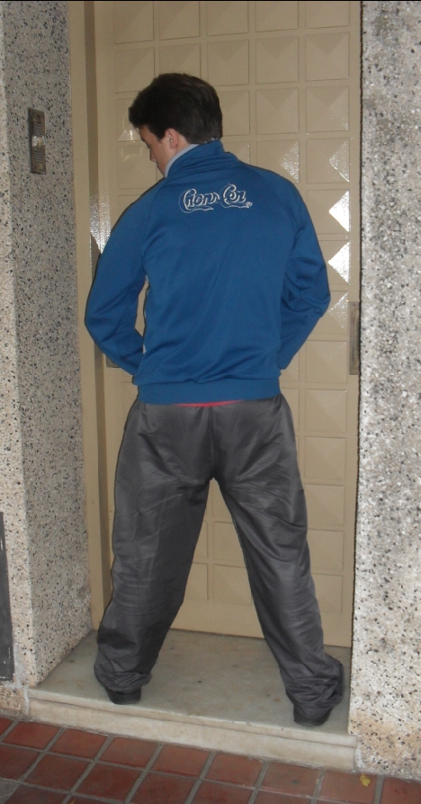
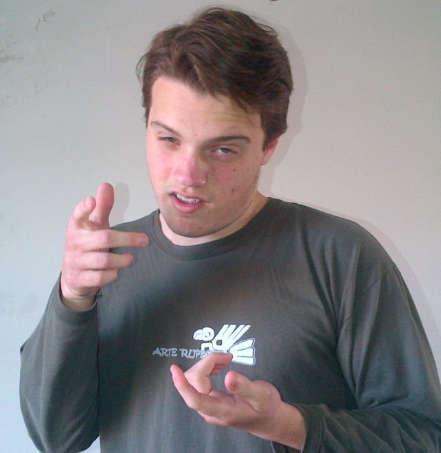

| Fecha de Publicación: 27/08/12 |
El Bressanismo orina en casa ajena para demostrar desprecio

"Ahhh, está calentito", dijo Bressán
"Bressán, actor de este hecho, comenta que al estar en contra de su partido político o dar opiniones negativas hacia ello recibirán una sanción justa por parte de él o sus seguidores. Un poco de orina no hace mal a nadie, aunque sólo es una advertencia."
[Leer más] |
Fecha de publicación: 25/08/12 |
Bressán se pone en pedo

El encuentro no fue del todo agradable
"Un paparazzi fotografió a Bressán en una casa donde sostiene una delicada bebida alcohólica. Esta foto molestó enormemente a nuestro camarada Bressanista y busca por medio de la justicia denunciarlo."
[Leer más] |
Fecha de publicación: 25/08/12 |
El Bressanismo se convierte en religión: "Los testigos de Bressán"
.jpg)
Bressán alucinando una nueva llegada
"Gracias a una amplia aceptación del público general, ahora en los censos se pregunta a la gente si sus creencias se basan en la fe del Bressanismo. Por otra parte, Bressán, asegura ser el Mesías enviado por Dios para lograr un mundo mejor."
[Leer más] |